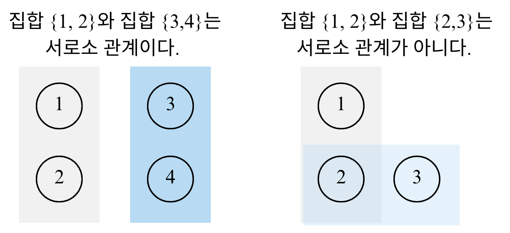

Lecture 8-1. Graph Algorithm#
DFS/BFS와 최단 경로에서 다른 내용은 모두 그래프 알고리즘의 한 유형으로 볼 수 있다. 일단, 알고리즘 문제를 접했을 때 서로 다른 개체 (혹은 객체 Object )가 연결되어 있다 는 것을 보면 가장 먼저 그래프 알고리즘을 떠올려야 한다.
서로소 집합#
수학에서 서로소 집합 Disjoint Sets이란 공통 원소가 없는 두 집합을 의미한다.

서로소 집합 자료구조#
서로소 집합 자료구조란 서로소 부분 집합들로 나누어진 원소들의 데이터를 처리하기 위한 자료구조 이다. “union”과 “find” 2개의 연산으로 조작할 수 있다. 서로소 집합에서 “find”연산은 특정한 원소가 속한 집합이 어떤 집합인지 알려주는 연산, “union”연산은 합집합으로 2개의 원소가 포함된 집합을 하나의 집합으로 합치는 연산이다.
서로소 집합 자료구조는 union-find 자료구조 라고 불리기도 한다. 두 집합이 서로소 관계인지를 확인할 수 있다는 말은 각 집합이 어떤 원소를 공통으로 가지고 있는지를 확인할 수 있다는 말과 같기 때문이다.
핵심 개념 요약
항목 |
설명 |
|---|---|
정의 |
서로 겹치지 않는 부분 집합들로 구성된 집합을 관리하는 자료구조 |
핵심 연산 |
find(x): 원소 |
주요 목적 |
두 원소가 “같은 집합(=같은 그룹)”에 속해 있는지 빠르게 판별하기 |
대표 활용 |
그래프의 사이클 판별, 네트워크 연결 여부, MST (최소 신장 트리) (Kruskal 알고리즘) |
기본 아이디어
각 노드는 자기 자신을 부모로 가지는 트리 형태로 시작한다.
집합을 병할할때는 루트 노드(대표자) 를 기준으로 합친다.
# 부모 노드 정보 저장
parent = [i for i in range(n+1)]
# find 연산 (경로 압축)
def find(x):
if parent[x] != x:
parent[x] = find(parent[x])
return parent[x]
# union 연산 (대표자 기준으로 합치기)
def union(a, b):
rootA, rootB = find(a), find(b)
if rootA != rootB:
parent[rootB] = rootA
경로 압축 (Path Compression)#
find() 연산을 반복할수록 트리 깊이가 깊어지면 성능이 나빠진다. -> 경로 압축을 적용하면 모든 노드가 바로 루트를 가리키게 만들어 평균 시간복잡도 O(\(\alpha(N)\))*로 줄일 수 있다. 즉, find()시 트리를 납작하게 만드는 역할을 한다.
\(\alpha\)는 아커만 함수의 역함수로 사실상 상수
예를 들어, union(a, b)로 두 집합이 합쳐진 후에, find함수로 root를 찾으면, parent가 모두 root으로 되어 후에 다시 parent를 찾고자 할때 빠른 시간안에 찾을 수 있다.
# without compression
# def find(x):
# return parent[x]
def find(x):
if parent[x] != x:
parent[x] = find(parent[x]) # 루트를 재귀적으로 찾으며 압축
return parent[x]
랭크 기반 합치기 (Union by Rank / Size)#
Union by Rank”는 항상 낮은 트리를 높은 트리에 붙여서, **트리의 높이(깊이)**를 일정하게 유지시키는 균형 유지 전략이다. 이로 인해 find()의 평균 시간이 **거의 O(1)**로 줄어든다
랭크 (rank): 트리의 높이 , 또는 노드 수(size) 를 나타내는 값.
union by rank (height) -> 높이가 낮은 트리를 높은 트리에 붙임
union by size (count) -> 노드 수가 적은 트리를 많은 쪽에 붙임
목적: 트리의 불균형 방지 (=높이의 최소화 및 breadth가 넓음 )
구현: 처음에 0 (height) 이나 1(size)로 초기화해준 후, “union”이 일어날 때만 갱신되며 트리의 대략적인 깊이 정보를 유지한다.
예시
union(1,2)
union(2,3)
union(3,4)
union(4,5)
rank = [1]*(n+1)
def union(a, b):
rootA, rootB = find(a), find(b)
if rootA == rootB:
return
if rank[rootA] < rank[rootB]:
parent[rootA] = rootB
elif rank[rootA] > rank[rootB]:
parent[rootB] = rootA
else:
parent[rootB] = rootA
rank[rootA] += 1
연산 |
평균 시간복잡도 |
설명 |
|---|---|---|
find() |
O(\(\alpha (N)\)) |
경로 압축 사용 시 거의 상수 |
union() |
O(\(\alpha (N)\)) |
find를 포함하므로 동일 |
전체 N개의 원소, M개의 연산 |
O((N+M) \(\alpha (N)\)) ~ O(N+M) |
거의 선형 시간 |
대표 활용 예시#
사이클 판별 (Cycle Detection): 그래프 간선을 순서대로 확인하며 같은 집합에 속한 두 노드를 다시 연결하려 할 때 -> 사이클 존재
for a, b in edges:
if find(a) == find(b):
print("Cycle detected")
else:
union(a, b)
최소 신장 트리 (Kruskal Algorithm)
edges.sort(key=lambda x: x[2]) # (a, b, weight)
cost = 0
for a, b, w in edges:
if find(a) != find(b):
union(a, b)
cost += w
연결 요소 세기 (Connected Components): find(i)를 전체 노드에 수행하여 루트가 몇 개인지 카운트하면 서로 연결된 컴포넌트 개수를 구할 수 있음
components = len(set(find(i)) for i in range(1, n+1))
Redundant Connection#
[Leetcode 684]
Number of Provinces#
[Leetcode 547]
Graph Valid Tree#
[Leetcode 261]
Lexicographically Smallest Equivalent String#
[Leetcode 1061]
Find if Path Exists in Graph#
[Leetcode 1971]